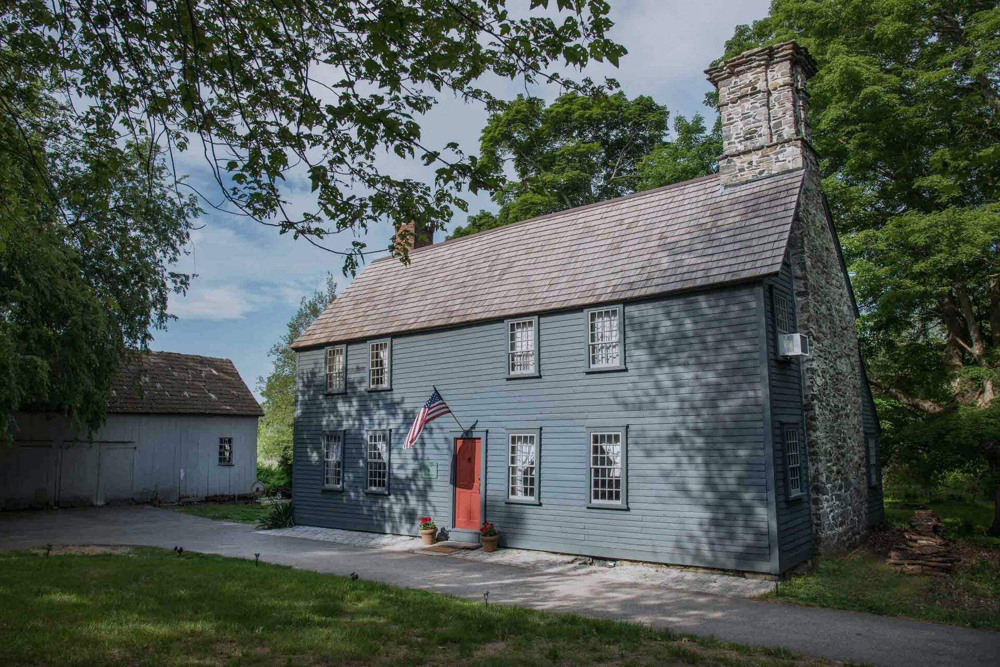
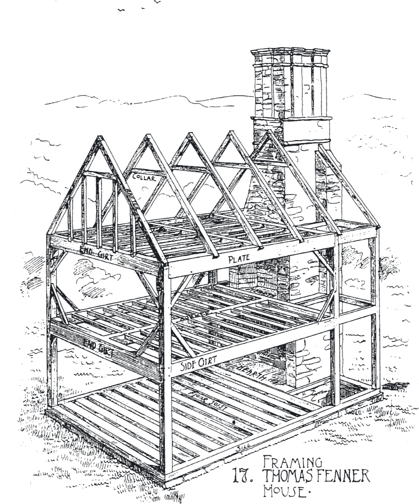
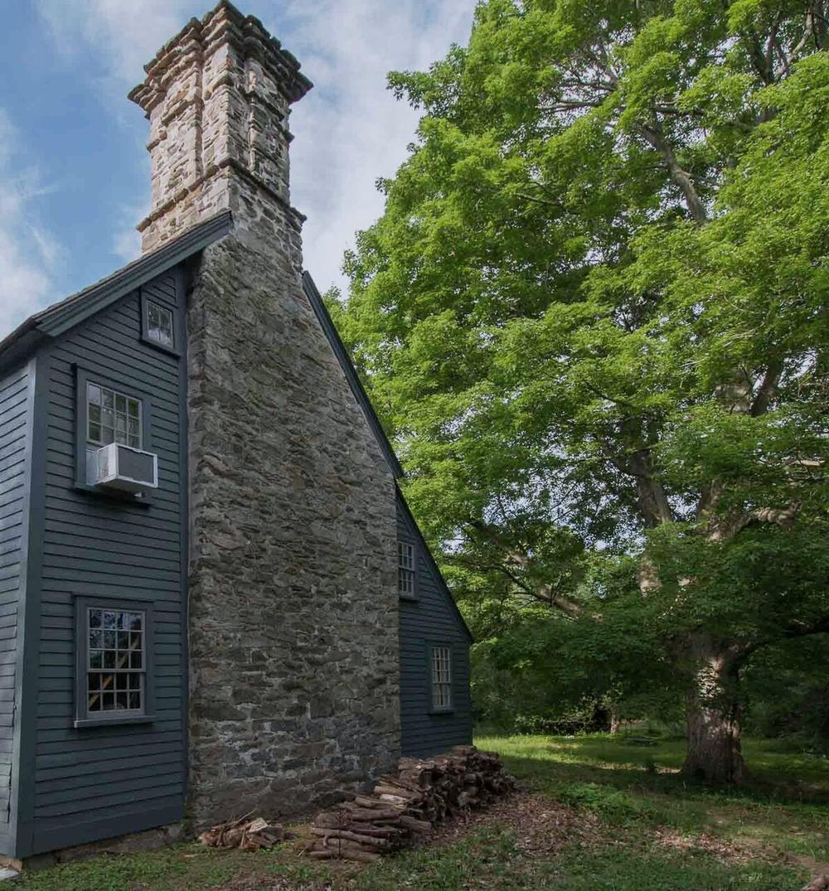
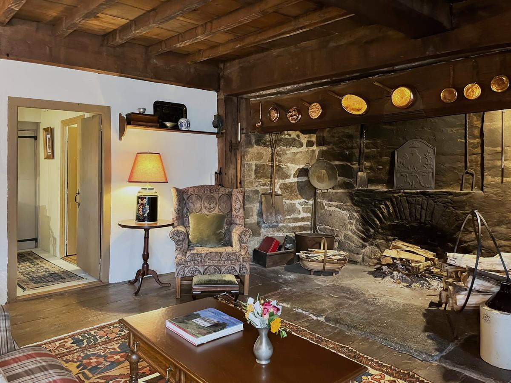
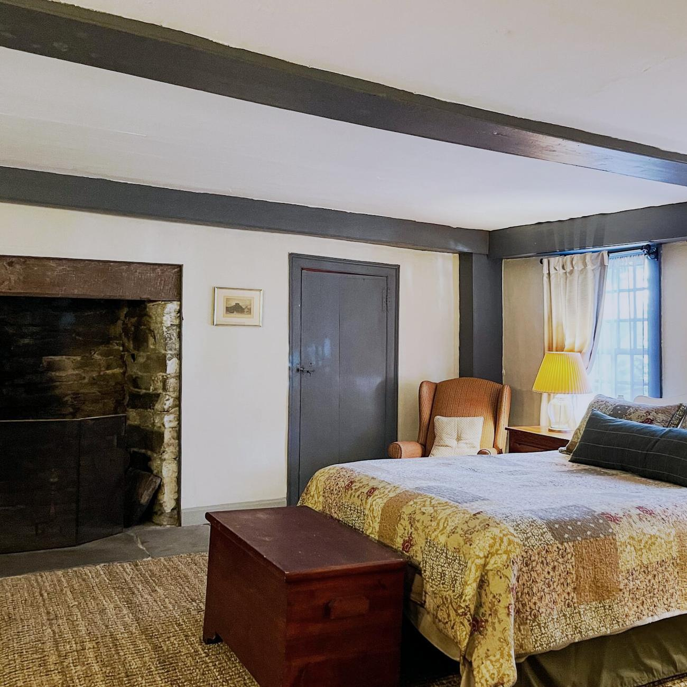
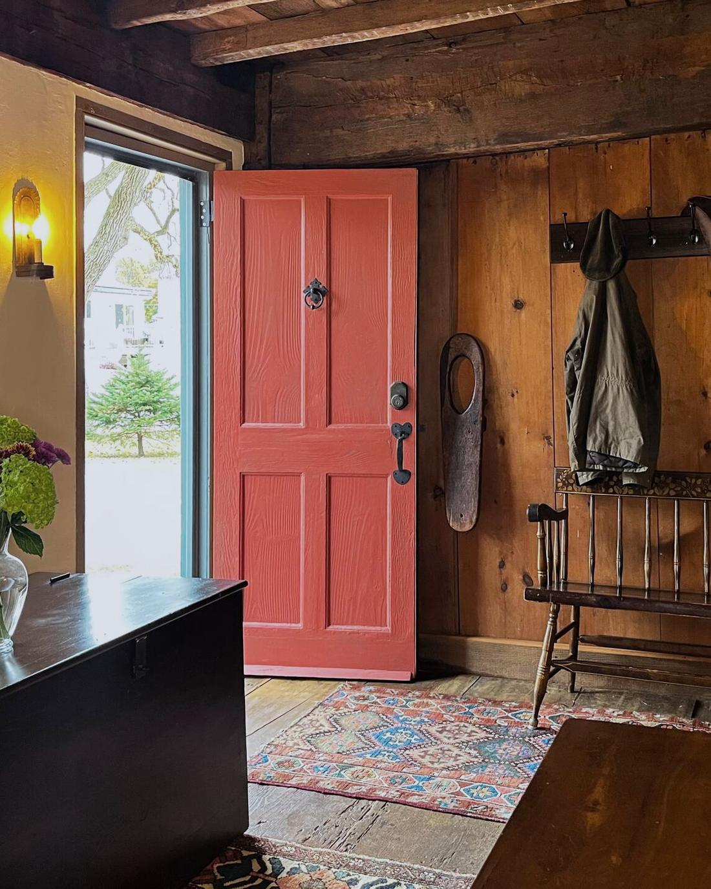

Fenner House
Cranston, Rhode Island
Built 1677

The house from Stony Acre Drive. The stone end, on the right, is the 1677 chimney wall.
A family house built in 1677, the year after King Philip’s War. It still keeps its great stone chimney and its fire room, and it takes guests.
The House
A stone-ender, described in its National Register nomination as the oldest surviving house in the Providence Plantations part of Rhode Island.
Captain Arthur Fenner built the house for his son, Major Thomas Fenner, after King Philip’s War had burned the settlements around Providence. It was finished in 1677.
It is a stone-ender, a way of building found almost only in Rhode Island: one end wall is a great stone chimney, and the rest is a timber frame sheathed in clapboard. The first house was a single room with a chamber above it. Later generations added to the south, and the stone end still stands at the north.
Guests live in the house as it is: the fire room and its open hearth, the chambers upstairs, the wide pine floors, and the lawn running down to Stone Pond.
- Built
- 1677, for Major Thomas Fenner (1652–1718)
- Type
- Stone-ender, timber frame and clapboard
- Listed
- National Register of Historic Places, 1990
- Setting
- Stony Acre Drive, Cranston, beside Stone Pond

- The stone end. The chimney stack fills the whole north wall.
- The roof frame. Rafters and collars, hewn, pit-sawn and pegged.
- The chamber. The upper room, over the fire room.
- The fire room. The great hearth, lettered in the drawing.


Stay
The whole house is let to one party at a time: five bedrooms, two bathrooms, room for up to ten.

The bedrooms
- The Major’s roomQueen and single
- The Governor’s roomQueen
- The Captain’s roomQueen
- The Sam Joy roomQueen, under the dormer
- The Boy’s roomSingle
Downstairs are the fire room, a formal dining room hung with family portraits, and a kitchen with a Glenwood range that looks onto the brick patio and the lawn.
Arriving
Arrival from 4 pm, departure by 11 am. Keyless entry; the code is sent before you arrive.
The house asks
No pets, no smoking, and no parties or events.
Getting here
Downtown Providence 15 minutes. T.F. Green airport 12 minutes. Newport about 45.
Nearby
Pawtuxet Village, Wickford, Snake Den State Park, and the beaches of the south county shore.

Write to the house to ask about dates.
Direct enquiries come straight to the family. Tell us when you would like to come and how many of you there are, and we will reply with availability and the rate for your stay.
Enquire by email